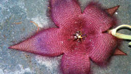

Противопопугайный сайт
Never Parrot

Мураьи и опарыши в цветке стапелии 2020
Ants and maggots on stapelia flower 2020
#goblincore
Смотреть на Яндекс.диске / Watch on Yandex.disk
, Смотреть webm в ipfs / Watch webm over ipfs
, Смотреть mp4 в ipfs / Watch mp4 over ipfs
↑